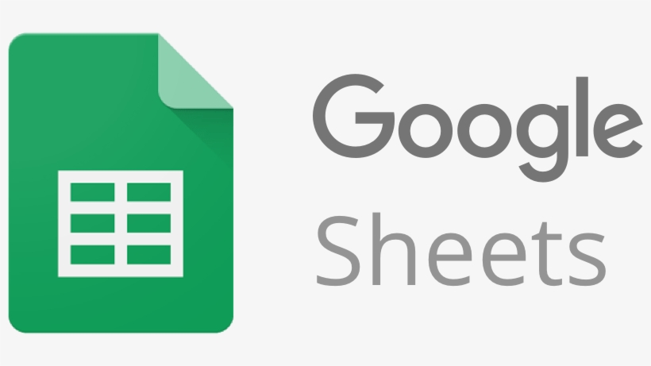

Google Sheets
Permite organizar información en filas y columnas, aplicar fórmulas y funciones para cálculos, y dar formato a los datos según tus necesidades. Es similar a Excel, pero con un enfoque en la colaboración en tiempo real, lo que permite que varias personas trabajen simultáneamente en un mismo documento.

¿PARA QUE SIRVE?
Funcionalidades adicionales: Google Sheets también ofrece herramientas basadas en inteligencia artificial, como Gemini, que ayudan a generar fórmulas, analizar datos y crear visualizaciones automáticamente. Además, permite consultar versiones anteriores, usar filtros personalizados y recibir notificaciones sobre cambios importantes en la hoja.¿CÓMO FUNCIONA?
Google Sheets es una hoja de cálculo en línea que permite organizar, analizar y compartir datos en tiempo real. Entre sus herramientas más destacadas se incluyen: Colaboración en tiempo real: varios usuarios pueden editar simultáneamente un documento y ver los cambios al instante.herramientas
- Fórmulas y funciones avanzadas
- Visualización de datos
- Automatización con IA (Gemini)
- Historial de versiones y comentarios
- Integración con otras aplicaciones

Ventajas principales
- Acceso desde cualquier lugar
- Colaboración en tiempo real
- Actualizaciones automáticas
- Compatibilidad
- Funciones avanzadas
Principales desventajas
- Conectado a internet
- Limitaciones de capacidad
- lentitud en comparación
- Funciones avanzadas limitadas
- riesgo potencial de exposición de información sensible
En resumen, Google Sheets es una herramienta gratuita y accesible que facilita la colaboración y el manejo básico de datos, pero no es ideal para grandes volúmenes de información, tareas altamente especializadas o entornos donde la privacidad y el rendimiento son críticos. Evaluar estas limitaciones es clave antes de decidir su uso.